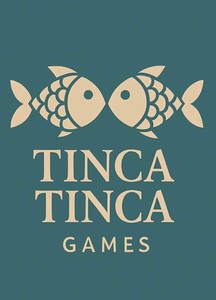

Trade Mark Journal No.2025/039 26 September 2025
UK00004251703 20 August 2025 (9,42)

- Class 9
- Software for smartphones; Smartphone software; Mobile apps; Mobile software; Smartphone software applications, downloadable; Games software; Software; Computer game software for use on mobile devices; Computer games programs [software]; Computer games programmes [software]; Games software for use with computers; Software for tablet computers; Computer application software for mobile phones; Software applications; Software and applications for mobile devices; Computer games software; Downloadable software applications for mobile phones; Software applications for use with mobile devices; Software applications for mobile devices; Application software for mobile phones; Software for mobile phones; Video games programs [computer software]; Computer software for mobile phones; Software programs for video games; Downloadable smart phone applications (software); Application software for mobile devices; Downloadable application software for smart phones; Computer application software featuring games and gaming; Computer games entertainment software; Computer game software for use on mobile and cellular phones; Video games software; Electronic game software for mobile phones; Computer application software for mobile telephones.
- Class 42
- Software as a service [SaaS] featuring software platforms for electronic gaming; Smartphone software design; Computer software programming services; Platforms for gaming as software as a service [SaaS]; Software engineering services; Services for designing computer software; Updating of smartphone software; Computer software design services; Services for the design of computer software; Software as a service [SaaS]; Software engineering; Computer and software consultancy services; Computer software consultancy services; Programming of computer game software; Computer software engineering; Software customisation services; Services for the writing of computer software; Computer programming and software design; Software as a service [SAAS] services; Computer software consultancy; Installation and customisation of computer applications software; Hosting computer software applications for others.
Richard Rascher